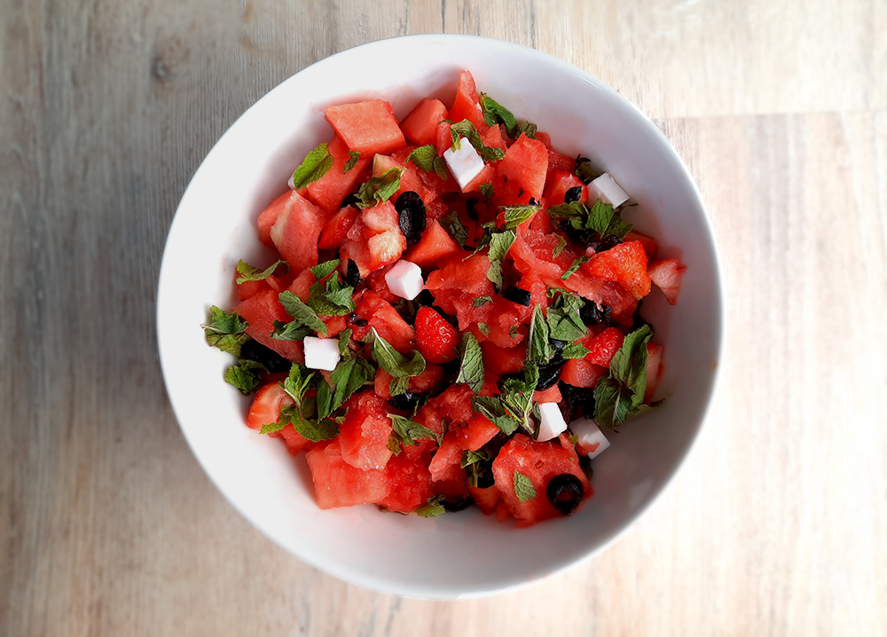

vietnamese pannenkoeken (banh xeo)

marokkaanse tajine

macedonische shopska salade
albanese byrek met spinazie

strawberry daiquiri cocktail
zomerse salade
Tip! Voor een veganistische variant vervang je de kaas door veganistische feta.

Bereidingsduur: 15 minuten
Aantal personen: 2
Ingrediënten:
700 gram watermeloen
4 takjes munt
34 zwarte olijven zwarte olijven
125 gram fetakaas
70 gram aardbeien
700 gram watermeloen
4 takjes munt
34 zwarte olijven zwarte olijven
125 gram fetakaas
70 gram aardbeien
Instructies:
1. Snijd de watermeloen en aardbeien in blokjes. Halveer de olijven. Doe dit alles in een grote kom.
2. Snijd de feta klein of verkruimel boven de salade. Snijd de munt klein en verdeel over de salade.
3. Roer alles goed door elkaar en klaar!
1. Snijd de watermeloen en aardbeien in blokjes. Halveer de olijven. Doe dit alles in een grote kom.
2. Snijd de feta klein of verkruimel boven de salade. Snijd de munt klein en verdeel over de salade.
3. Roer alles goed door elkaar en klaar!